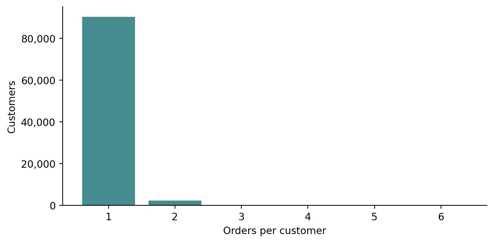
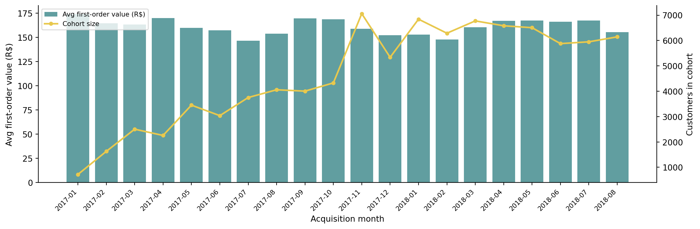

import os
import pandas as pd
import matplotlib.pyplot as plt
import matplotlib.ticker as mticker
from dotenv import load_dotenv
load_dotenv()
OLIST_DIR = os.path.join(os.environ["DATA_DIR"], "olist")
orders = pd.read_csv(
os.path.join(OLIST_DIR, "olist_orders_dataset.csv"),
parse_dates=["order_purchase_timestamp"],
)
order_payments = pd.read_csv(os.path.join(OLIST_DIR, "olist_order_payments_dataset.csv"))
order_items = pd.read_csv(os.path.join(OLIST_DIR, "olist_order_items_dataset.csv"))
customers = pd.read_csv(os.path.join(OLIST_DIR, "olist_customers_dataset.csv"))DRAFT Customer Unit Economics: ARPU, Contribution Margin, and LTV
Python
Analytics
Business Metrics
Olist
Unit economics asks what one customer is worth. We compute ARPU, gross contribution margin, and LTV for Olist — and learn why the standard LTV formula breaks down when repeat purchases are almost zero.
Aggregate revenue tells you how big the business is. Unit economics tells you whether the business makes sense. The core question is: what is the revenue and cost associated with acquiring and serving one customer? If that number is positive and large enough to cover acquisition costs, the business is viable. If it is not, growth makes the problem worse, not better.
The unit here is a customer — specifically a unique customer, identified by customer_unique_id. For dataset setup, see Customer Analytics with Olist, Part 1: Data Setup. The customer_id vs customer_unique_id distinction is load-bearing for everything in this post.
Setup
We work with delivered orders only and join customer_unique_id onto every order.
delivered_orders = (
orders[orders["order_status"] == "delivered"]
.merge(customers[["customer_id", "customer_unique_id"]], on="customer_id")
)
revenue_per_order = (
order_payments[order_payments["order_id"].isin(delivered_orders["order_id"])]
.groupby("order_id")["payment_value"]
.sum()
.reset_index()
.rename(columns={"payment_value": "revenue"})
)
items_per_order = (
order_items[order_items["order_id"].isin(delivered_orders["order_id"])]
.groupby("order_id")
.agg(
item_revenue=("price", "sum"),
freight=("freight_value", "sum"),
)
.reset_index()
)
orders_enriched = (
delivered_orders
.merge(revenue_per_order, on="order_id")
.merge(items_per_order, on="order_id")
)ARPU
ARPU — average revenue per user — is the simplest unit economics metric. We compute it at the customer level: total revenue each unique customer generated, then average across customers.
revenue_per_customer = (
orders_enriched
.groupby("customer_unique_id")["revenue"]
.sum()
)
arpu = revenue_per_customer.mean()
arpu_median = revenue_per_customer.median()
print(f"Mean ARPU: R$ {arpu:.2f}")
print(f"Median ARPU: R$ {arpu_median:.2f}")
print(f"Customers: {len(revenue_per_customer):,}")Mean ARPU: R$ 165.20
Median ARPU: R$ 107.78
Customers: 93,357Mean and median are close here because almost every customer has exactly one order. A small number of repeat buyers pull the mean slightly above the median.
Gross contribution margin
Revenue alone is not profit. Customers also incur costs. Olist does not publish its commission rates or operational costs, but the order data gives us one cost we can measure: freight.
We define gross contribution as:
\[\text{Gross contribution} = \text{Item revenue} - 0\]
Wait — freight is paid by the customer and passed through to the carrier, so from the marketplace’s perspective it is neither revenue nor cost. What matters is the item revenue: the sum of price across all items in the order. Freight is a cost to the customer, which affects their purchase decision, but it is not Olist’s cost.
A more honest framing for the customer’s perspective:
\[\text{Effective price paid for goods} = \text{payment\_value} - \text{freight}\]
We compute both.
cust_metrics = (
orders_enriched
.groupby("customer_unique_id")
.agg(
total_revenue=("revenue", "sum"),
total_item_revenue=("item_revenue", "sum"),
total_freight=("freight", "sum"),
n_orders=("order_id", "count"),
)
.reset_index()
)
avg_revenue = cust_metrics["total_revenue"].mean()
avg_item_revenue = cust_metrics["total_item_revenue"].mean()
avg_freight = cust_metrics["total_freight"].mean()
freight_share = avg_freight / avg_revenue
print(f"Avg total payment per customer: R$ {avg_revenue:.2f}")
print(f"Avg item revenue per customer: R$ {avg_item_revenue:.2f}")
print(f"Avg freight per customer: R$ {avg_freight:.2f}")
print(f"Freight as share of payment: {freight_share:.1%}")Avg total payment per customer: R$ 165.20
Avg item revenue per customer: R$ 141.62
Avg freight per customer: R$ 23.55
Freight as share of payment: 14.3%Freight represents a significant share of what customers pay. This is the Olist marketplace serving a large, geographically dispersed country. For any analysis of customer “value”, we need to be clear about whether we mean what the customer paid in total or what they paid for actual goods.
Repeat purchase rate
The LTV formula most commonly used is:
\[\text{LTV} = \frac{\text{Gross margin per period}}{\text{Churn rate}}\]
This formula assumes a recurring revenue stream — a subscription, a regular purchase cadence — where “churn rate” has a stable, measurable meaning. Before applying it, we need to know whether Olist customers actually return.
orders_per_customer = cust_metrics["n_orders"].value_counts().sort_index()
repeat_customers = (cust_metrics["n_orders"] > 1).sum()
total_customers = len(cust_metrics)
repeat_rate = repeat_customers / total_customers
print(f"Total unique customers: {total_customers:,}")
print(f"Repeat customers (2+ orders): {repeat_customers:,}")
print(f"Repeat purchase rate: {repeat_rate:.2%}")Total unique customers: 93,357
Repeat customers (2+ orders): 2,801
Repeat purchase rate: 3.00%fig, ax = plt.subplots(figsize=(7, 3.5))
counts = (
orders_per_customer
.reset_index()
.rename(columns={"count": "customers", "n_orders": "orders"})
.head(6)
)
ax.bar(counts["orders"].astype(str), counts["customers"],
color="#458d8f", edgecolor="white", linewidth=0.5)
ax.set_xlabel("Orders per customer")
ax.set_ylabel("Customers")
ax.yaxis.set_major_formatter(mticker.FuncFormatter(lambda x, _: f"{x:,.0f}"))
ax.spines[["top", "right"]].set_visible(False)
plt.tight_layout()
plt.show()
The repeat purchase rate is near zero. This is not a data quality issue — it reflects the structure of the marketplace. Olist customers are largely one-time buyers.
This has a direct consequence for the LTV formula: if churn rate ≈ 1 (everyone churns after their first purchase), then LTV = margin / 1 = margin per order. The steady-state formula collapses to a single transaction.
LTV
For a near-zero repeat rate, the practical LTV is the expected revenue from the first (and almost certainly only) order.
# LTV ≈ ARPU for one-time buyers
ltv_simple = avg_revenue
# Cohort-adjusted: does first-order value vary by acquisition month?
orders_enriched["cohort"] = (
orders_enriched["order_purchase_timestamp"]
.dt.to_period("M")
)
first_order = (
orders_enriched
.sort_values("order_purchase_timestamp")
.groupby("customer_unique_id")
.first()
.reset_index()[["customer_unique_id", "cohort", "revenue"]]
)
cohort_ltv = (
first_order
.groupby("cohort")
.agg(
customers=("customer_unique_id", "count"),
avg_first_order_value=("revenue", "mean"),
)
.reset_index()
)
cohort_ltv["cohort"] = cohort_ltv["cohort"].astype(str)
print(f"Simple LTV (≈ ARPU): R$ {ltv_simple:.2f}")Simple LTV (≈ ARPU): R$ 165.20# Filter to full months with enough customers
plot_data = cohort_ltv[
(cohort_ltv["customers"] >= 200) &
(~cohort_ltv["cohort"].str.startswith("2016"))
].copy()
fig, ax1 = plt.subplots(figsize=(12, 4))
ax2 = ax1.twinx()
ax1.bar(plot_data["cohort"], plot_data["avg_first_order_value"],
color="#458d8f", alpha=0.85, label="Avg first-order value (R$)")
ax2.plot(plot_data["cohort"], plot_data["customers"],
color="#e8c84d", linewidth=2, marker="o", markersize=4, label="Cohort size")
ax1.set_xlabel("Acquisition month")
ax1.set_ylabel("Avg first-order value (R$)")
ax2.set_ylabel("Customers in cohort")
ax1.set_xticks(range(len(plot_data)))
ax1.set_xticklabels(plot_data["cohort"], rotation=45, ha="right", fontsize=8)
ax1.spines[["top"]].set_visible(False)
ax2.spines[["top"]].set_visible(False)
lines1, labels1 = ax1.get_legend_handles_labels()
lines2, labels2 = ax2.get_legend_handles_labels()
ax1.legend(lines1 + lines2, labels1 + labels2, loc="upper left", fontsize=8)
plt.tight_layout()
plt.show()
First-order value is relatively stable across cohorts — no systematic trend suggests that customer quality changed over the two-year window. The cohort in late 2017 shows a slight dip; this could be a seasonal effect or a mix of acquisition channels. Cohort size grows through 2017 before dropping off at the end of the dataset (partial months).
What this means
For Olist, LTV ≈ R$ 165 per customer. This number represents almost entirely the value of a single transaction. There is no renewal, no subscription, and very little chance of a second purchase.
This is not necessarily a bad business — it depends on whether CAC is low enough to make the margin on that single transaction worthwhile. That question is the subject of the next post in this series: Acquisition Economics: CAC, Payback Period, and the LTV:CAC Ratio.
The structural lesson is more general. The steady-state LTV formula (margin / churn) is designed for businesses with recurring revenue. Applying it to a one-time purchase marketplace gives a misleadingly precise answer to the wrong question. Always check the repeat purchase rate before reaching for the formula.